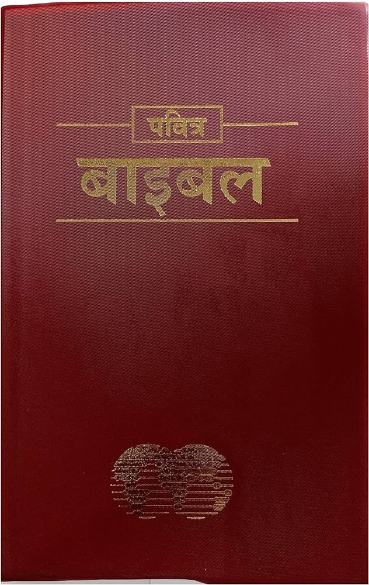

रहस्योद्घाटन की
इससे कोई फर्क नहीं पड़ता कि यीशु के अनुयायी होने के नाते हमें किन परीक्षणों का सामना करना पड़ सकता है, हमारे पास यह जानने का बहुत बड़ा आश्वासन है कि इतिहास पर भगवान का नियंत्रण है। वह कहानी का अंत जानता है, और वह हमेशा आराम और खुशी का स्रोत होता है।
प्रकाशितवाक्य की पुस्तक
प्रकाशितवाक्य की पुस्तक प्रेरित यूहन्ना को दिए गए एक दर्शन का अभिलेख है जब वह पतमोस के यूनानी द्वीप पर निर्वासन में रह रहा था। यह बाइबल की सबसे कठिन पुस्तक हो सकती है। रहस्योद्घाटन यीशु के अनुयायियों के बड़े उत्पीड़न के समय के दौरान लिखा गया था; कई विद्वानों का मानना है कि यह एक तरह के कोड में लिखा गया होगा जो जॉन के दिनों के ऐसे पाठकों द्वारा अच्छी तरह से समझा गया होगा। कुछ का मानना है कि प्रकाशितवाक्य में वर्णित अधिकांश, यदि सभी नहीं, तो पहले ही पूरे हो चुके हैं।
परन्तु, जैसा कि पुराने नियम के भविष्यवक्ताओं के साथ हुआ था, यूहन्ना भी हो सकता है कि आने वाली चीजों के दर्शन देख रहा हो। उदाहरण के लिए, दुनिया में बुराई के स्रोत, शैतान को हमेशा के लिए दूर किए जाने के रूप में चित्रित किया गया है। चूँकि दुनिया में अभी भी बुराई है, इसलिए यह भविष्यवाणी अभी पूरी नहीं हुई है।
यद्यपि प्रकाशितवाक्य में कुछ प्रतीकात्मकता और कल्पना को समझना कठिन है, फिर भी आपको इसे कम से कम एक बार पढ़ना चाहिए। प्रकाशितवाक्य 1:3 इसे पढ़ने वालों के लिए एक आशीष की प्रतिज्ञा करता है। सात कलीसियाओं को पत्र (प्रकाशितवाक्य 2-3) अभी भी आधुनिक कलीसिया के लिए बहुत कुछ कहना है। और, यदि आपने पुराने नियम के भविष्यवक्ताओं का कोई पाठ किया है, तो आप पाएंगे कि लेखन की शैलियों के बीच समानताएं बहुत दिलचस्प हैं।
यदि हम प्रकाशितवाक्य में और कुछ नहीं पढ़ते हैं, तो हमें कम से कम अंतिम अध्याय, अध्याय 22 को पढ़ना चाहिए। इसमें, जब हम परमेश्वर के साथ अपने अनन्त घर में जाते हैं, तो हम उस में बड़ी आशा पा सकते हैं जो हमारी प्रतीक्षा कर रही है।
बाइबल में और कहानियाँ पढ़ें! परमेश्वर के वचन के माध्यम से अपनी यात्रा शुरू करें - इसे हर दिन पढ़ें!